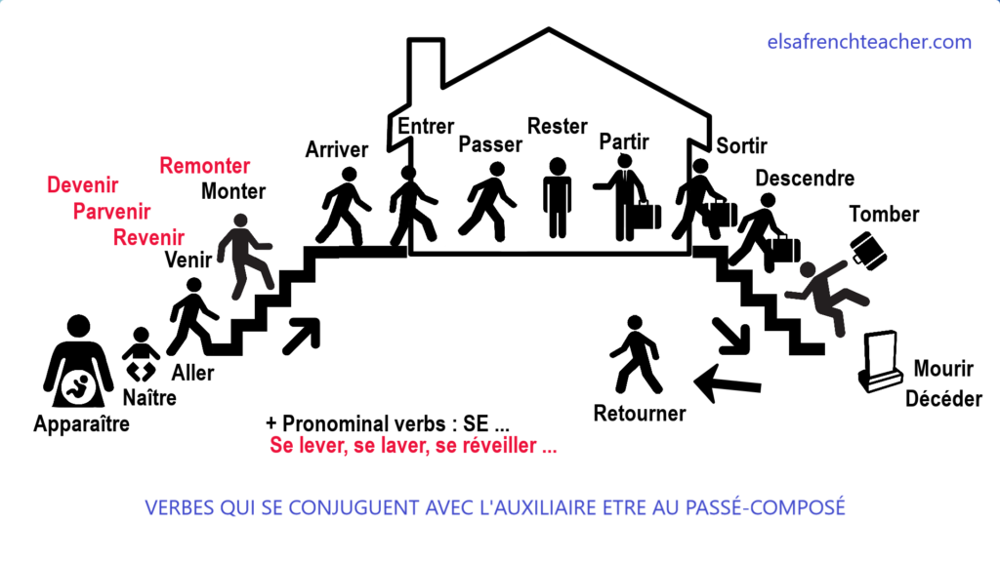

French 2: Module 3 - Connect
Contextualiser les structures
Les verbes qui se conjuguent au passé composé avec l’auxiliaire être:
La plupart des verbes se conjuguent au passé composé avec l’auxiliaire avoir. :
J’ai fait / tu as chanté / il a dit / elle a promis / nous avons marché / ils ont voulu / elles ont voyagé.
Les verbes pronominaux se conjugent avec l’auxiliaire être:
je me suis ennuyé / tu t’es amusé / il s’est promené / elle
s’est lavée / nous nous sommes énervés / vous vous êtes levés / ils se sont couchés / elles se sont excusées.
Certains verbes se conjuguent avec l’auxiliaire être:
Source: elsafrenchteacher.com
© Durham College. All rights reserved.